مدن ومحافظات شرق المملكة العربية السعودية وما تشتهر به
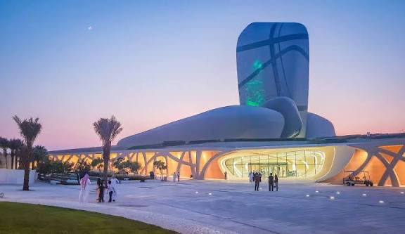
عاصمة المنطقة الشرقية، مركز إداري وتجاري وساحلي مهم.
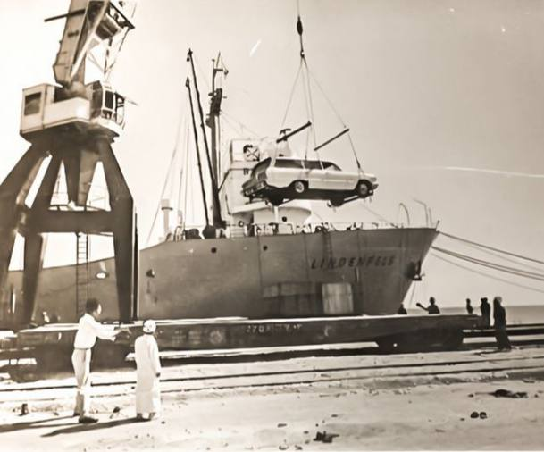
تعديل قديمًا.
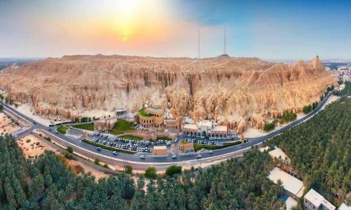
أكبر واحة نخيل في العالم، تشتهر بالزراعة والتراث.
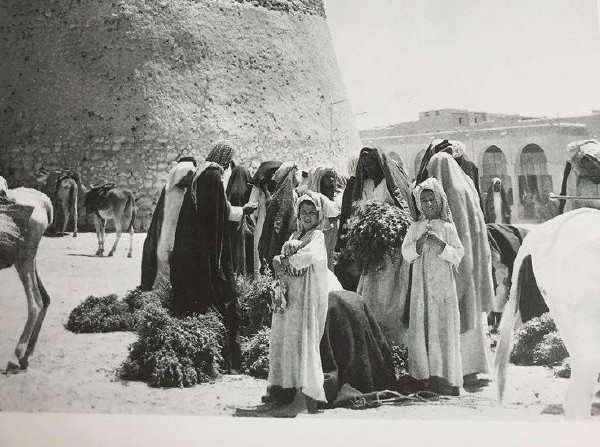
كانت مركزًا زراعيًا وتجاريًا قديمًا وممرًا للقوافل عبر القرون.
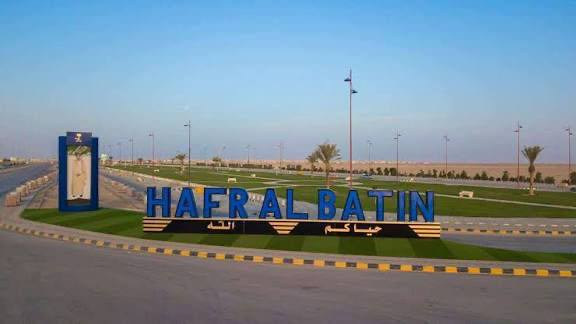
مدينة تخدم الطرق البرية وتشتهر بالتجارة والخدمات.
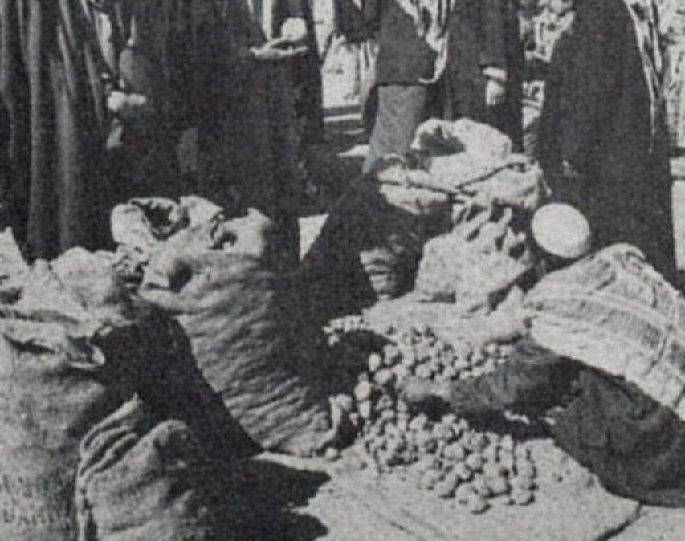
سوق الفقع في حفر الباطن عام 1972م.
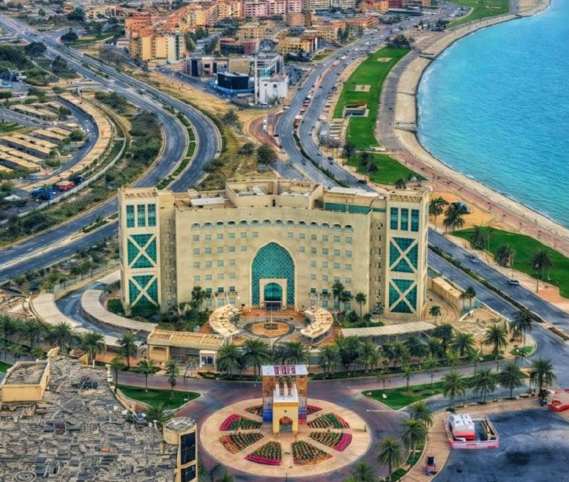
مدينة صناعية كبرى وميناء مهم على الخليج العربي.
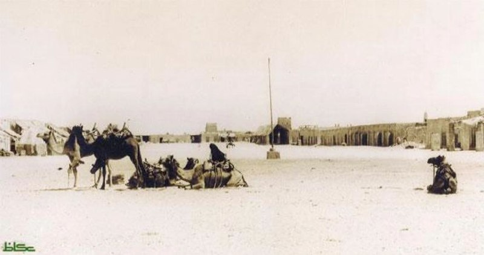
كانت بلدة ساحلية صغيرة للصيد والتجارة قبل النهضة الصناعية.
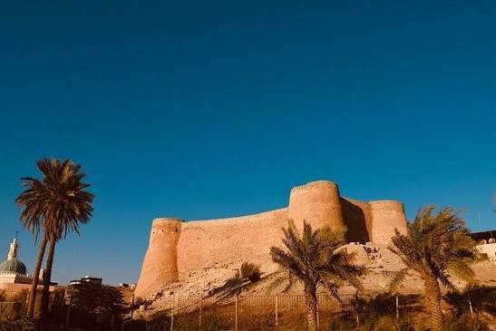
تشتهر بالزراعة والبحر والتراث الساحلي.
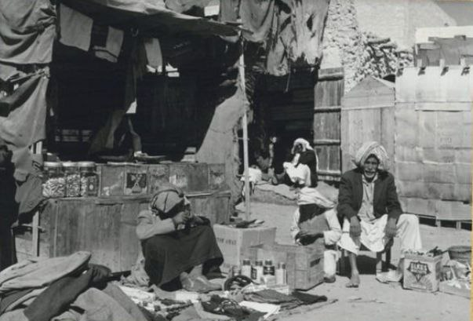
هذه الصورة توثق مشهداً من الماضي في مدينة القطيف, تعود الصورة لعام 1952م تقريباً.
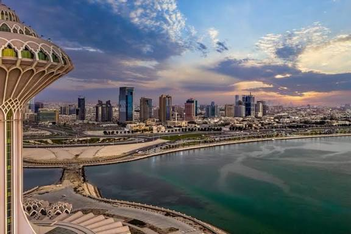
مدينة حديثة تشتهر بالكورنيش والخدمات والسياحة.
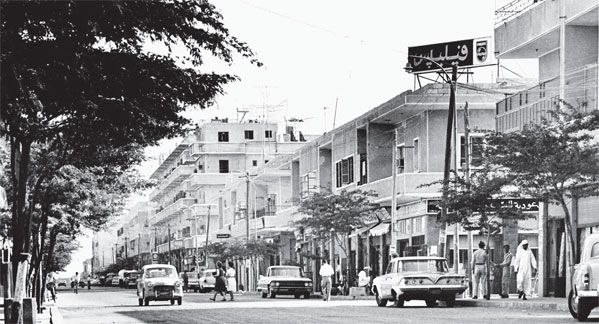
نشأت مع بدايات النفط وتوسعت سريعًا كمركز حضري حديث (شارع الملك خالد)
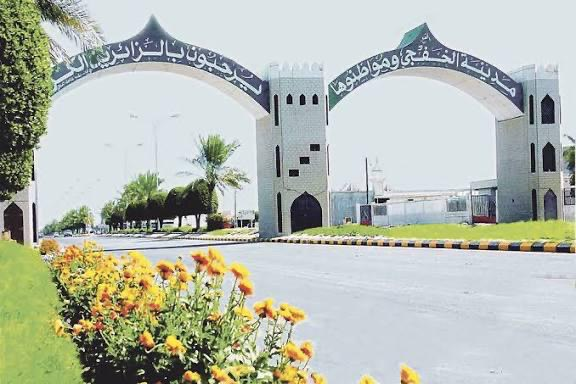
مدينة حدودية تشتهر بالطاقة والصيد البحري.
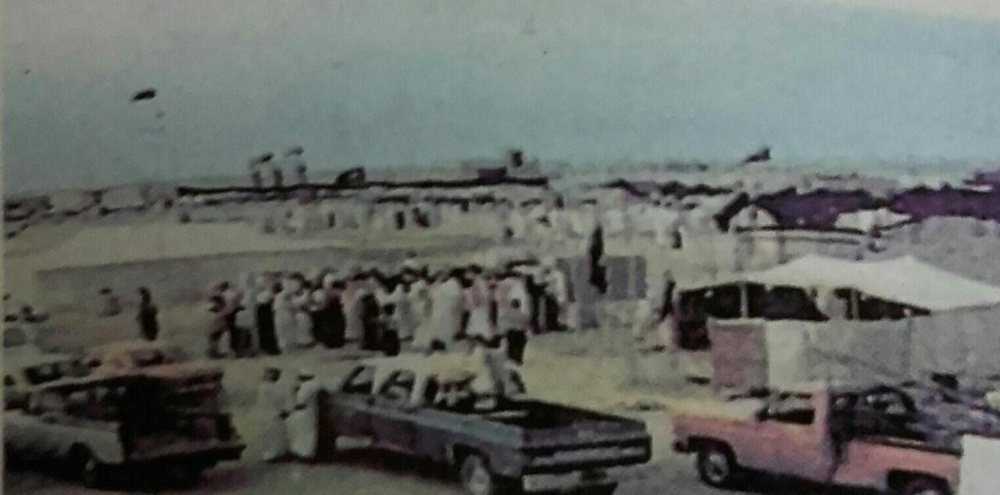
كانت منطقة ساحلية صغيرة ثم برزت مع اكتشافات الطاقة.
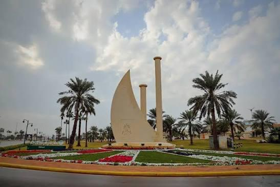
تضم واحدًا من أكبر موانئ تصدير النفط في العالم.
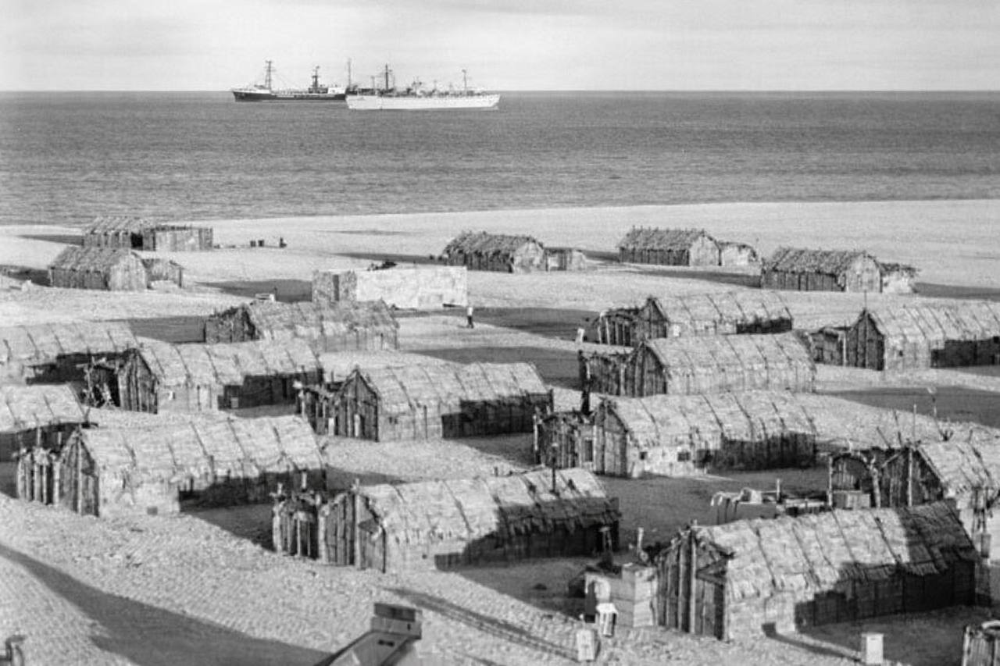
تحولت من رأس ساحلي بسيط إلى مركز عالمي لصناعة النفط.
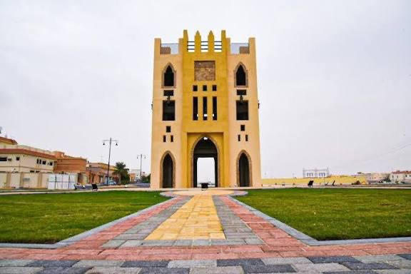
تشتهر بمنشآت معالجة النفط وموقعها الصناعي المهم.
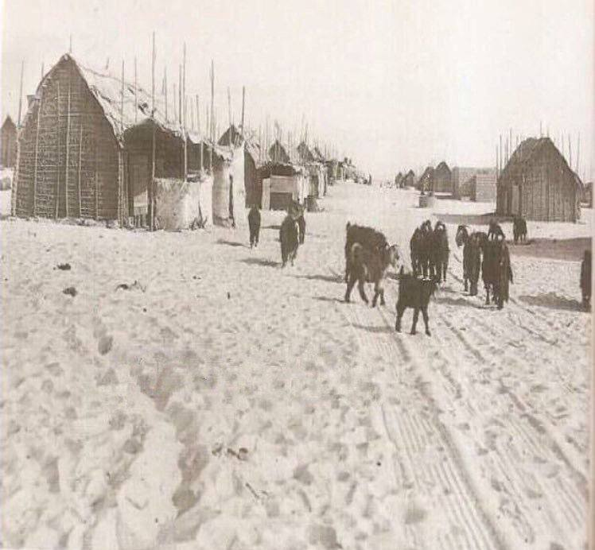
ألتقطت في عام 1955م.
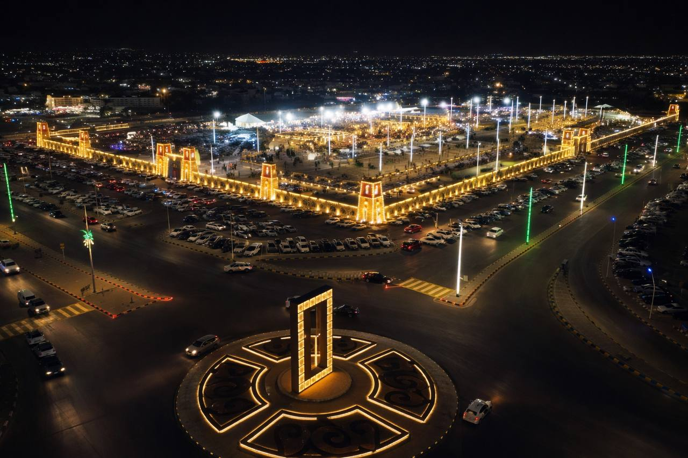
محافظة تخدم الطرق البرية بين الشرق والوسط.
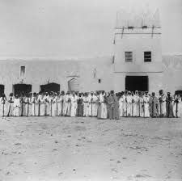
هذه الصورة توثق لحظة تاريخية في قصر الملك عبدالعزيز في بلدة نطاع عام 1930م.
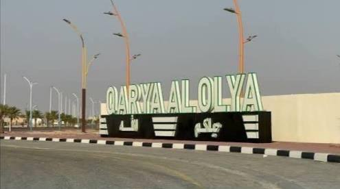
محافظة تخدم الطرق بين السعودية والكويت.
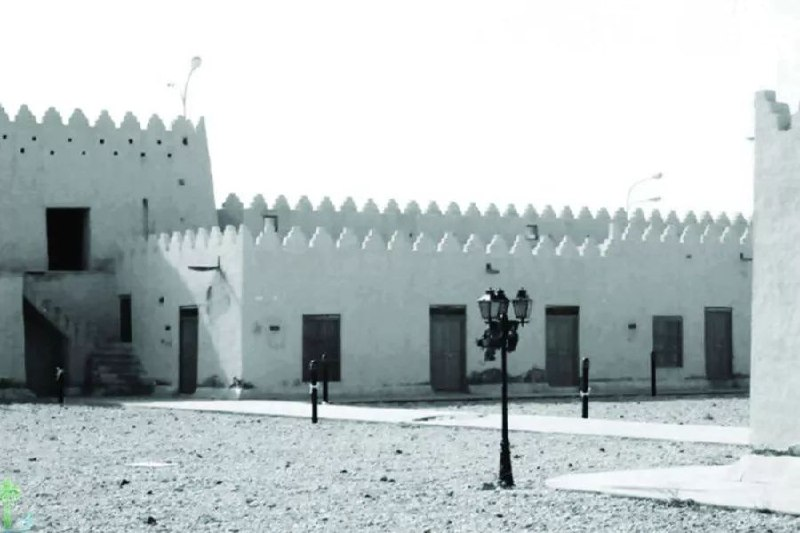
نشأت لخدمة القوافل والمسافرين في شمال الشرقية.